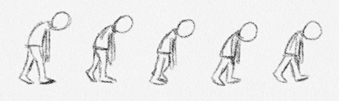

This is a compilation of some animations I did in a 3D Animation class at NYU Tandon in the 2019 spring semester. It includes my final project, some walk cycles, a jumping flour sack, and some bouncing balls. I animated everything in Autodesk Maya. My professor provided us with the character models used in the animations.
For the final project, students had to create an animation with one human character and another character interacting. Initially, the length requirement was that it was longer than 15 seconds and less than 1 minute.
I didn't come up with the story I used in the final until much later. At first, my story idea was that there was a squirrel who was scared of humans and a girl who fed it so much that the squirrel kept following her after she left. Eventually, the squirrel jumps onto the girl, causing her to be scared of squirrels.
I storyboarded that idea and then created the animatic for it. Upon making the animatic, I realized that the story might be too long. The animatic was over one minute, and so the actual animation would probably be much longer than that. But since the max length requirement was one minute, I figured that I could maybe get by it once I started animating.
However, later on, our professor decided to lower the maximum length of the animation to 30 seconds, which meant that my video would've been way over the limit. Although it may have been seen as a bad thing for some, it was actually a good thing. Limiting the animation length forces you to really tighten up your story and make it memorable. My story was a little too complicated and wasn't all that strong to begin with. Now that there was an even shorter time limit, I had to find a different story idea.
My professor suggested that I make the story about the human and the squirrel both being hungry, since my other story was about feeding squirrels. The conflict between the two characters would be clearer that way because maybe they could be fighting over food. I took his advice and decided to build off that story idea.
The story would be about the squirrel and the human in a standoff similar to a western showdown. The squirrel's stomach growl breaks the tension and the human laughs. Then the human's stomach growls, causing the squirrel to laugh. The human pulls out a sandwich and is about to eat it when the squirrel snatches it away. They have a tug-of-war with the sandwich before it is accidentally flung off a cliff, where no one can eat it.
I chose a tense kind of music for the standoff to match the mood of a western showdown. Once the squirrel's stomach growls, the tense music stops and it shifts to a more silly, playful kind of music that would be played in a saloon. I decided to do that because the rest of the video was more comedic so having that music would fit.
There are definitely things that I can improve about my final project. One thing I had trouble with was having the characters hold the sandwich correctly. I wasn't completely familiar with how constraining an object to different characters worked in Maya, so the sandwich didn't look quite right near the end.
In the class, we had to create a walk cycle, a run cycle, and three variations of the walk cycle. I chose to do a sneak walk, a sad/tired walk, and a model walk for the variations.
There were several things about a sneak walk that made it different from a regular walk cycle. The person was more hunched over and the arms had to stay still instead of swaying back and forth. The person would also have to step in more of a tip-toe fashion. I sketched out the key frames of what a sneak walk looks like so I could use it as a guide when animating.
The sad/tired walk also had its differences from a regular walk cycle. The person's movements had to be slower and more limited, and so their steps would be very short. The person would also have to be hunched over with their head hanging low and their arms hanging straight down. I also sketched out the key frames for the sad/tired walk to use as a guide.

The model walk was similar to a regular walk cycle, but it had more confidence in their strides. The person had to have good posture and walk by putting their next step in front of the previous step, like how they walk on a runway. I didn't sketch anything out for this one since it was similar to the regular walk, but I did look at video references of model walks online.
The run cycle is different from a walk cycle in that the person takes bigger steps and is moving faster. The range of motion in the arms and legs are greater. I made a sketch of a run cycle to help out with the animation.
I also made a sketch of a flour sack running to help me understand the running motion and also just for fun.
When it comes to a jump, there needs to be squash and stretch, anticipation, and follow through. Before the flour sack jumps, there is a wind-up (anticipation) to let the audience know it's about to jump. During the jump, it stretches when it's mid-jump and squashes when it's on the floor or at the top. The follow through happens throughout the jump with the little ears moving a little later than the main body.
For the bouncing balls, we had to choose three different types of balls to animate. I chose a beach ball, kickball, and baseball. Because a beach ball is lighter and softer, it doesn't bounce very high and it has some squash and stretch. A kickball is made of a more elastic material so it will bounce higher and have more squash and stretch. A baseball is heavier and harder so it won't bounce high at all and will have very little squash and stretch.